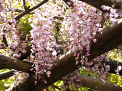
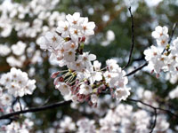
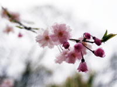
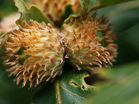
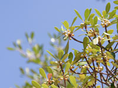
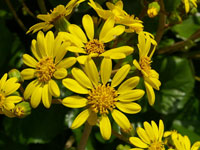
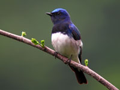
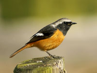
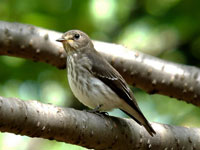

TSURUGATAYAMA鶴形山
 明治2年（1872年）の神仏分離令まで妙見堂が倉敷村の氏神とされ、妙見山（みょうけんやま）と呼ばれていましたが、明治24年（1891年）に現在の鶴形山に改名されました。鶴形山は、かつて瀬戸内海に浮かぶ島の名残りとしてクスドイゲ、ツワブキ、オニヤブソテツなどの葉肉が厚く、硬いものが多い海岸性植物が生育し、エノキ、ムクノキ、アベマキなどの落葉高木は山全体に生育しています。4月上旬頃には、120本のソメイヨシノと3本のシダレザクラが咲き誇り、一面が淡いピンク色に染まります。また、渡り鳥の中継地となっているので留鳥、夏鳥、冬鳥、旅鳥など四季折々の野鳥が見られる他に昆虫も多く生息しており、蝶類では約50種が観察されています。
明治2年（1872年）の神仏分離令まで妙見堂が倉敷村の氏神とされ、妙見山（みょうけんやま）と呼ばれていましたが、明治24年（1891年）に現在の鶴形山に改名されました。鶴形山は、かつて瀬戸内海に浮かぶ島の名残りとしてクスドイゲ、ツワブキ、オニヤブソテツなどの葉肉が厚く、硬いものが多い海岸性植物が生育し、エノキ、ムクノキ、アベマキなどの落葉高木は山全体に生育しています。4月上旬頃には、120本のソメイヨシノと3本のシダレザクラが咲き誇り、一面が淡いピンク色に染まります。また、渡り鳥の中継地となっているので留鳥、夏鳥、冬鳥、旅鳥など四季折々の野鳥が見られる他に昆虫も多く生息しており、蝶類では約50種が観察されています。
阿知の藤

鶴形山公園にある藤の木は、岡山県の天然記念物にも指定されている全国でも最古のもので、推定樹齢が約300～500年のアケボノフジという珍しい種類。「阿智の藤」と呼ばれ、5月頃には淡紅色の花が高い藤棚一面を華やかに彩り、人々に親しまれています。近年、樹勢が衰えていましたが、地域活動により樹勢回復が取り組まれています。
ソメイヨシノ

サクラの代表種であるソメイヨシノは、オオシマザクラとエドヒガンザクラの交配で生まれた園芸品種の観賞用サクラ。ソメイヨシノという名前の由来は、染井村（現在の東京都豊島区）から吉野桜という名称で広がっていた品種を奈良県吉野山の山桜と混同するとして染井吉野と改名したといわれています。
シダレザクラ

ソメイヨシノよりも濃いピンク色の花を咲かせるシダレザクラは、寿命が長く全国にも名木が数多くあります。芭蕉堂前では3本のシダレザクラが見られます。
アベマキ

阿智神社本殿から絵馬殿裏手にかけて多く見られる落葉高木のアベマキは、古くから建築材料、薪、炭、椎茸の原木などに利用され、鶴形山で最も大きなドングリを実らせます。
モッコク

阿智神社拝殿向かって右手に縁結びの木として親しまれているモッコクは、温暖な地域に生育する常緑高木で、大きなものでは直径1ｍ、高さ20ｍまで生育し、6月～7月にかけてクリーム色の花を咲かせます。
ツワブキ

海岸の岩上などに多く生育するツワブキは、葉の表面に美しく光沢があります。開花時期は10～11月で日陰でもよく育つことから日本庭園にもよく用いられています。
オオルリ（雄）

光沢のある瑠璃色が頭から尾にかけて広がっています。腹部は白色、尾羽には黒色が混じる夏鳥です。美しい声でゆっくりと鳴くことからウグイスとコマドリと並び日本三鳴鳥とも呼ばれています。
ジョウビタキ（雄）

スズメより少し小柄なジョウビタキは、頭が白色で顔は黒色、腹部が橙色。民家や公園などでもよく見られ、身近な冬鳥の1つとしてとして親しまれています。
エゾビタキ

国外で繁殖・越冬をするエゾビタキは、上面は灰褐色で下面は白色。胸部や腹部などには灰褐色の縦斑が見られます。日本では鶴形山のような低山や平地の林などで見られます。
一覧に戻る